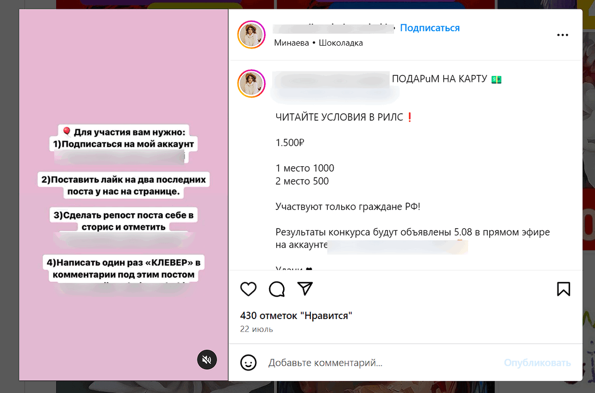
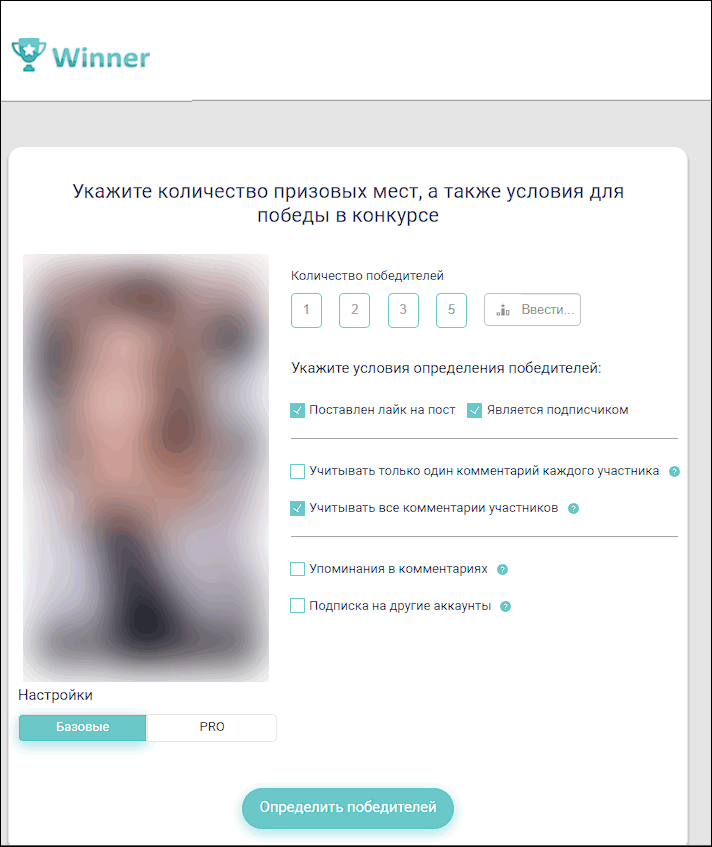
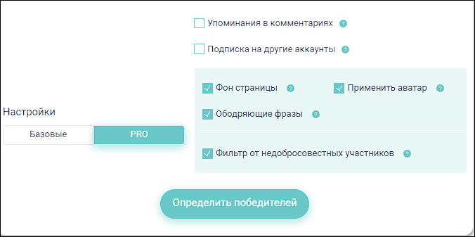
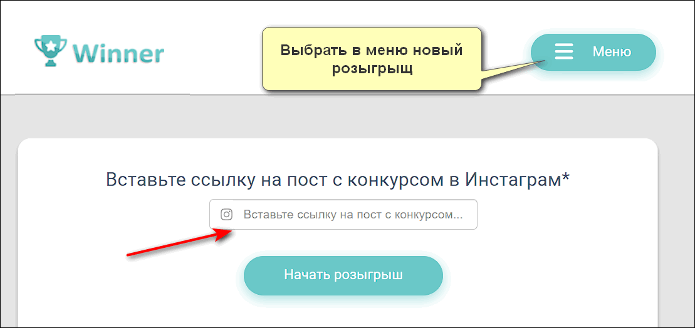

Разновидности конкурсов и розыгрышей в Инстаграм*

Разобраться в видах розыгрышей в Инстаграме* несложно: есть основные типы, которые чаще всего используют в социальной сети и заслужившие популярность у медийных личностей. Начиная от творческих и заканчивая репостами, комментариями.
Творческий конкурс в Инстаграме*
Владелец крупного блога, владелец страницы с креативным контентом и мастер-классами может предложить своим подписчикам поучаствовать в творческом конкурсе. Такой вариант обычно реализован такими способами:
- картины, фан-арты, тексты или хенд-мейд на заданную тему;
- короткие видео для Историй, с упоминание конкурсного аккаунта;
- фотографии с определенным хештегом.
Например, аккаунт NationalGeo проводит постоянный конкурс на лучшую фотографию с изображением пейзажей и живой природы. Авторы наилучших изображений будут опубликованы в официальном профиле с упоминанием своей страницы.
 Есть и другие варианты: вы автор мастер-классов и хотите привлечь новых клиентов к своему курсу. Создать конкурсную публикацию, где предложить участникам повторить ваше творение, используя инструкцию в открытых источниках. Победители получают приглашение на курс абсолютно бесплатно и с постоянной поддержкой от организатора.
Есть и другие варианты: вы автор мастер-классов и хотите привлечь новых клиентов к своему курсу. Создать конкурсную публикацию, где предложить участникам повторить ваше творение, используя инструкцию в открытых источниках. Победители получают приглашение на курс абсолютно бесплатно и с постоянной поддержкой от организатора.
Создание уникального контента
Не менее интересная идея, как сделать розыгрыш в Инстаграме* и получить новую активную аудиторию – предложить создать контент на заданную тему. Допустим, вы видеоблогер и хотите увеличить охваты, получив при этом не только новое число в подписчиках, но активных фанатов. Вы создаете публикацию, где привлекаете читателей к созданию фотографий, коротких клипов или полноценных роликов и главное, чтобы они использовали ваш хештег для поиска контента, участия в нем. Интересные и записи победителей стоит разместить в Истории, упомянув каждого. В качестве приза можно предложить совместный пост, денежное вознаграждение или другие подарки.
По комментариям и репостам
Наиболее популярный способ, как сделать розыгрыш – через комментарии, лайки и репосты. В социальной сети можно опубликовать чужую публикацию к себе на страницу, если нажать на кнопку «Отправить в Историю» и в этом случае, появится миниатюра поста, который при нажатии откроется полностью на аккаунте автора.

Как проводить конкурс по комментариям:- попросить участников оставлять один или несколько откликов под конкурсной записью;
- определенные отклики. Творческие или по заданной теме;
- отметить нужное количество друзей и знакомых.
Например, некоторые страницы устраивают мини-розыгрыши, где нужно отметить друга и рассказать связанную с ним необычную историю. И автор наиболее интересной будет вознагражден в цифровом формате или реальном.
По одному и нескольким
Несколько комментариев – отличный способ, как повысить охваты и заслужить максимальное от аудитории, включая те, которая будет порекомендована после придет из рекомендаций. С помощью комментариев проводить конкурсы проще всего: пользователи могут писать короткие отклики, оставлять небольшие истории или отмечать своих друзей. Выбирают победителей с помощью генератора случайных чисел, используя онлайн-сервисы. Это наиболее удобный способ, как выгрузить комментарии и выделить всех участников. Но есть и другие варианты, как определить победителя:
- выгрузить базу самостоятельно. Воспользоваться компьютерной версией и скопировать все отклики. После — добавить их в таблицу, присвоив каждому порядковый номер. Выбирать вручную;
- с помощью генератора случайных чисел. Также скопировать отклики и с помощью генератора определить номер победителя.
Такие варианты менее удобны, чем сервисы выгружающие данные и не требующие от организатора конкурса ничего кроме ссылки на публикацию.
Как узнать победителей: Getwinner
Сайт Getwinner используют для проведения розыгрышей и определения победителей.

С помощью GetWinner определить победителей просто: генерирует ответ по заданным параметрам, добавляет фоновое изображение и предлагает пользователю написать приветственное сообщение.
Как использовать сервис:- Зайти в GetWinner и создать аккаунт.
- Перейти к добавлению ссылки на публикацию – указать параметры конкурса.

- Подтвердить генерацию.
Организатор может выбирать:
- учитывать все комментарии или только один от участника;
- упоминания в комментариях;
- подписка на все конкурсные аккаунты;
- является подписчиком;
- поставлен лайк на публикацию.
В продвинутых настройках можно выбрать «Фильтр от недобросовестных участников»: фильтрует лайки и комментарии от ботов. Там же можно настроить цветовой фон, написать ободряющую цитату и применить аватарку победителя на поздравительной открытке.
Подвести итоги конкурса в Инстаграме*
После того, как победитель будет определен, нужно создать соответствующую публикацию в социальной сети. Лучше, если автор конкурса подготовит аудиторию планомерно: сделать завлекающий пост в Историях и после в Ленту добавит новую запись. Есть и другие способы, как уведомить участников:
- в назначенный день создать трансляцию, в которой показать, как были определены победители. То есть, сделать запись с экрана, где генерируется ответ и показано, кто именно одержал победу;
- отдельная публикация. При подготовке к конкурсу нужно указывать срок и когда наступит день определения – разместить в Ленту короткое видео.
Вариант с оповещением аудитории с помощью трансляции наиболее удобен и выгоден. В первую очередь по той причине, что подписчики увидят что организатор честен и не пытается выдать приз подставным участникам. Во вторую: это вариант попробовать новый формат ведения блога, привлечение новых подписчиков.